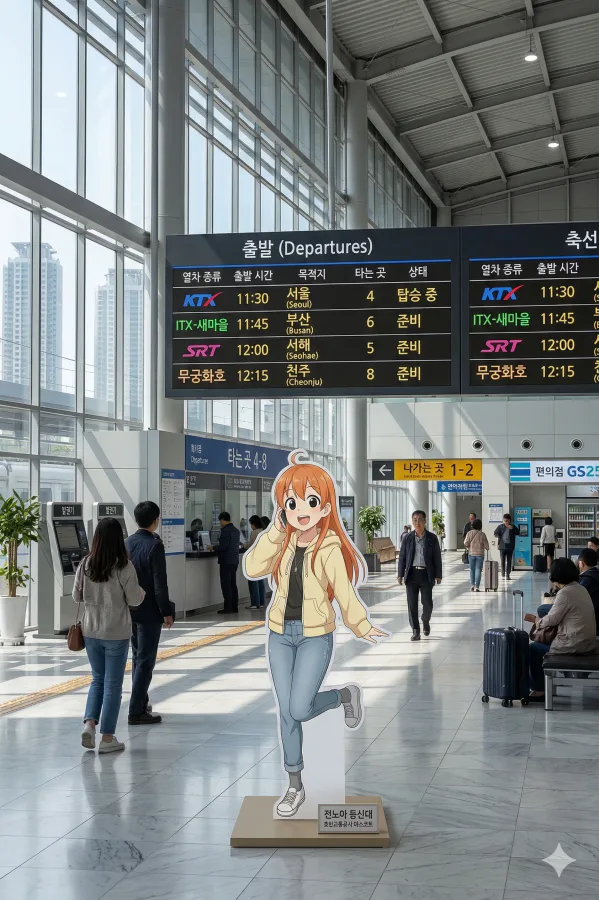
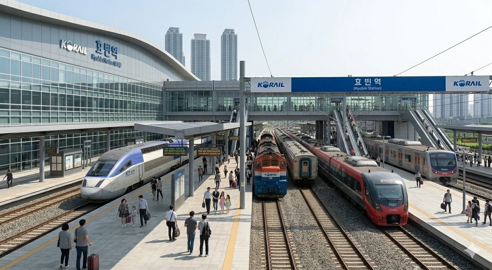
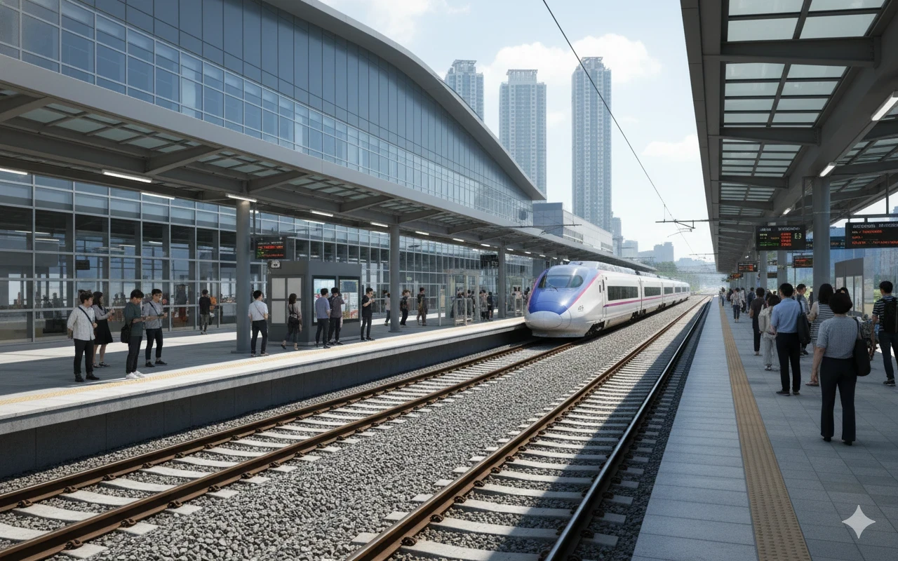
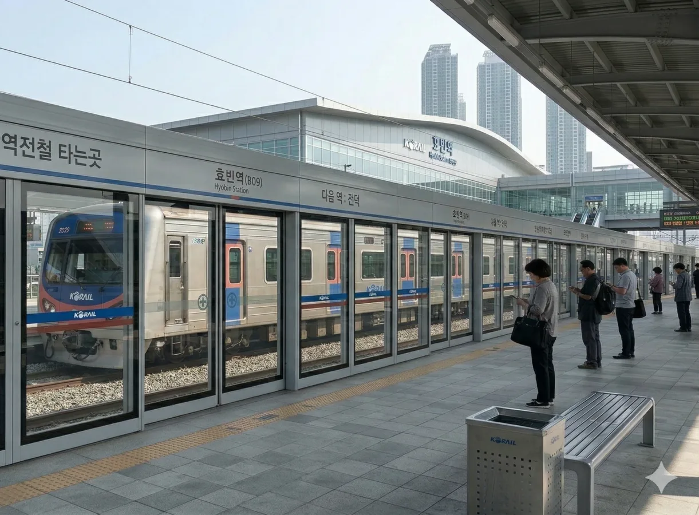

1. 개요
빈효선과 빈효고속선, 강빈선의 철도역. 효빈광역시 동구 사가당동 1080 소재.
2. 역사(歷史)
-
효빈역 1대 역사 (1911~1915):

당시 덕빈북도 효빈군 읍내면 유내리(현 효빈광역시 중구 경동 23) - 현 경동아파트 부지 근처에 위치했다. 사진을 보면 알겠지만 말이 역사지 사실상 동네 초가집 하나 덜렁 가져다 놓은 수준이었다고 한다. 흙바닥에 대충 깔아둔 선로, 앙증맞은 미니 증기 기관차, 그리고 흰 두루마기와 치마저고리를 입고 기차를 구경하는 승객들의 모습에서 당시의 처참했던 교통 인프라를 엿볼 수 있다. 개업 초기라 수요 예측 실패(...)와 부지 협소 문제로 인해 불과 4년 만에 빤스런 하듯 이전을 결정하게 된다. -
효빈역 2대 역사 (1915~1930):

당시 덕빈북도 효빈군 효빈면 유내리(현 효빈광역시 중구 정동 41) - 현 장원역에서 불과 200m 떨어진 거리에 위치했다. 아니 이럴 거면 그냥 처음부터 장원역 자리에 짓지 왜... 초가집 시절을 벗어나 일제강점기 특유의 기와지붕을 얹은 번듯한 목조 건물로 환골탈태했으며, 중앙에 한자로 적힌 '효빈역(孝彬驛)' 현판도 당당하게 걸었다. 제법 그럴싸한 철도역의 형태를 갖추었으나, 원인 미상의 화재라고 쓰고 누군가의 방화라고 읽는다 및 급격한 도심 팽창으로 인해 버티지 못하고 또다시 이전을 감행한다. -
효빈역 3대 역사 (1930~1990):


현 위치로 이전 - 당시 덕빈북도 효빈군 청엽면 사가당리(1935년 부 승격 이후 효빈부 사가당정)에 자리를 잡았다. 무려 60년 동안 효빈의 관문 역할을 수행한, 효빈 시민들의 애환이 짙게 서린 전설의 역사다. 붉은 벽돌과 콘크리트 슬라브가 섞인 3층 떡대 건물로 지어져 투박함의 끝판왕을 보여주었으며, 옥상과 외벽에는 '새마을운동', '증산 수출 보국' 같은 살벌하고 웅장한 표어가 큼지막하게 걸려있어 70~80년대의 시대상을 200% 반영했다. 구내 승강장 사진을 보면 일명 '호랑이 도색'을 한 구형 디젤 기관차와 초록색 통근열차, 그리고 플랫폼을 꽉 채운 엄청난 인파가 뒤엉켜 근대 효빈의 폭발적인 리즈 시절을 증명한다. 다만 80년대 후반에는 시설 노후화가 극에 달해 비만 오면 대합실 천장에서 물이 폭포수처럼 샜다는 전설이 있다(...) -
효빈역 4대 역사 (1990~현재):

현 위치에 대대적으로 증축 - 효빈광역시 동구 사가당동 1080. 민자역사 사업과 함께 거대한 유리궁전(...)으로 재탄생했다. 과거의 칙칙함은 온데간데없이 탁 트인 통유리 외벽과 세련된 영문 'Hyobin Station' 간판을 자랑하며, 역 광장 앞을 유유히 지나가는 세련된 분홍색 노면전차(트램)와 뒷배경의 아찔한 고층 주상복합 아파트들이 어우러져 완전한 현대 대도시의 심장부로 자리 잡았다. 2010년에 한 차례 대규모 리모델링을 거쳐 현재의 삐까뻔쩍한 모습을 갖추게 되었다. 다만 여름엔 쪄 죽고 겨울엔 얼어 죽는 통유리 특유의 위엄을 온몸으로 느낄 수 있다. 채광을 얻고 냉난방비를 내다 버린 온실효과는 덤.
3. 역 정보
효빈광역시의 대표역으로, 빈효선의 중간역이자 빈효고속선, 강빈선의 시종착역이다. 경빈선으로 진입하는 내덕신호장을 통해 광주송정, 대전, 서울 방면과 빈주, 서해, 덕주 방면으로 가는 고속/일반열차가 운행 중이다.
이용객은 2020년 철도연감 기준 약 1,310만 명으로, 약 2,350만 명의 서울역, 약 1,750만 명의 동대구역, 약 1,340만 명의 대전역에 이어 전국 4번째로 이용객이 많은 역이다.
4. 역내 시설
거대한 민자역사 규모에 걸맞게 다양한 편의시설이 입점해 있다. 특히 패스트푸드 라인업이 화려한데, 맥도날드, KFC, 버거킹, 롯데리아가 모두 입점해 있어 이른바 '햄버거 그랜드 슬램'을 달성한 역이기도 하다. 맘스터치만 들어오면 완벽하다. 덕분에 점심시간만 되면 뭘 먹을지 고민하는 결정장애 여행객들을 심심찮게 볼 수 있다.
이외에도 3층 대합실 주변으로 대형 푸드코트와 다양한 프랜차이즈 카페, 올리브영, 의류점 등이 역사 내에 위치해 있어 열차 이용객뿐만 아니라 인근 주민들의 편의 시설 역할도 톡톡히 하고 있다. 특히 푸드코트는 효빈시에서 입점 업체를 엄격하게 엄선하여 운영하기 때문에, 역전 식당가치고는 꽤 가성비가 훌륭한 맛집들이 많다는 평이다.
가장 큰 특징은 역사 3층과 인근의 AK 플라자 효빈점이 구름다리(육교)로 직접 연결되어 있다는 점이다. 밖으로 나가지 않고도 백화점으로 이동할 수 있어 지갑을 털리기 딱 좋은 최적의 동선을 자랑한다. 이 구름다리는 효빈역 상권의 핵심 동선 역할을 하며, 주말에는 사람이 미어터져서 걷기 힘들 정도(...)다.

5. 승강장
6면 14선의 거대한 복합식 구조를 가지고 있다.
|
 |
| 전 등급 열차가 집결하는 효빈역 6~9번 일반선 승강장 전경 |
|
 |
| KTX 및 SRT가 정차하는 4~5번 고속선 승강장 전경 |
|
 |
|
빈효선 광역전철 전용 2~3번 승강장 전경. |
| 번호 | 노선 및 열차 등급 | 행선지 |
|---|---|---|
| 1 | 빈효선 (화물열차) | 구내 화물열차 |
| 2 | 빈효선 광역전철 | 효빈항 방면 |
| 3 | 빈효선 광역전철 | 이자·약산·궁하·천주·고남 방면 |
| 4 · 5 | 빈효고속선 (경빈선 직결) (KTX · SRT) | 서울·광주송정·서해·덕주·빈주·계성 방면, 당역 종착 |
| 6 | 빈효선 (KTX · SRT · ITX · 무궁화 · 해양열차) | 서울·광주송정·서해·빈주·계성 방면 |
| 7 · 8 | 빈효선 (ITX-새마을 · ITX-마음 · 무궁화호) | 서울·광주송정·서해·빈주·계성 방면, 효빈항 방면(일부) |
| 9 | 빈효선 (ITX-새마을 · ITX-마음 · 무궁화호) | 효빈항 방면 |
| 10 · 11 | 강빈선 (ITX-새마을 · ITX-마음 · 무궁화호) | 강주·빈주·북계성·반양 방면 |
5.1. 출구 정보
- 1, 2번 출구: 효빈역 서부광장 및 동부광장 방면 (도로 인접)
- 3번 출구: 남부 방면 (효빈동부소방서, 효빈동중고등학교, 효빈역 주공아파트)
- 4번 출구: 서부 방면 (신덕 방면, 효빈동부경찰서)
- 5번 출구: 북부 방면 (덕현지구 1970~80년대 아파트 단지)
6. 일평균 이용객
| 연도 | KTX | SRT | ITX-새마을/마음 | 무궁화호 | 총합 | 비고 |
|---|
7. 연계 교통
-
도시철도 및 광역전철
- ● 빈효선 광역전철: 지상 역사 내 2, 3번 플랫폼 이용.
- ● 1호선 / ● 3호선: 지하 환승 통로 또는 일반열차 1, 2번 출구 앞 지하철 4번 출구 이용.
- ● 7호선: 환승 통로를 거쳐 지하철 5, 7번 출구 이용 또는 일반열차 1번 출구에서 도보 2분 거리. -
시내버스
구분 운행 노선 번호 순방향 1, 4, 6, 9, 10, 13, 15, 18, 26, 39, 111, 129, 131, 132, 172, 192, 193, 219, 242, 371, 391, 1000, 1111, 2000, 3000, 6000, 6666 역방향 01-1, 04-1, 06-1, 09-1, 10-1, 31, 51, 81, 62, 93, 111-1, 129, 311, 312, 712, 192, 193, 129, 422, 371, 391, 1000R, 1111R, 2000R, 3000R, 6000R, 6666R - 효빈역 북부출구: 도시철도 1, 3, 7호선 인접 정류소
- 효빈역 남부출구: 빈효선 광역전철 인접 정류소
8. 역 주변 정보
8.1. 효빈역 광장
효빈역은 불규칙한 다각형 구조를 띠고 있다 보니 도로에 바로 접한 일반열차 1, 2번 출구를 기준으로 서부광장과 동부광장으로 나뉜다. 규모 대비 광장이 그리 크지는 않으나, 3층 규모의 효빈역 부속건물에 정원이 조성되어 있는 등 은근 신경을 쓰는 모습이 보여진다.
8.2. AK 플라자 효빈점
지상 효빈역 앞에 있는 백화점으로, 원래 효빈역 내에 건설할 예정이었으나 부지 제한 및 동선 문제로 건너편에 지어졌다. 애니메이트 샵이 이곳에 있으며, 효빈역 상가가 생활 위주라면 AK 플라자는 명품과 문화 방면에서 활용된다. 효빈에서 고송신도시 현대백화점 다음으로 매출이 높다.
9. 기타/여담
-
효빈교통공사 플래그십 스토어 (공식 굿즈샵)
역사 내에 효빈교통공사 공식 플래그십 굿즈샵이 크게 자리 잡고 있다.이곳은 빈효선의 마스코트 캐릭터인 '전노아(Jeon Noa)' 관련 굿즈가 전 지점을 통틀어 가장 다양하고 많이 구비된 곳으로 유명하다. 특히 한정판 피규어가 발매되는 날이면 오픈 전부터 철덕들과 팬들이 장사진을 이루는 진풍경을 볼 수 있다.효빈교통공사 공식 플래그십 스토어 전경 및 전노아 굿즈 -
철도 교통의 허브...이자 헬게이트
KTX와 SRT가 필수 정차하며, 빈효선과 강빈선의 기종점 역할을 겸하고 있어 연중무휴 붐비는 곳이다. 금요일 오후나 명절 연휴가 되면 그 넓은 대합실이 사람으로 꽉 차서 발 디딜 틈도 없어진다. 사람 구경하고 싶으면 효빈역으로 오면 된다. 입석 표조차 구하기 하늘의 별 따기 수준. -
지역 드립
효빈 토박이들 사이에서는 "약속 장소 어디?"라고 물으면 십중팔구 "효빈역 시계탑 앞" 혹은 "맥도날드 앞"이다. 그놈의 맥도날드 앞은 만남의 광장이 되어버렸다.